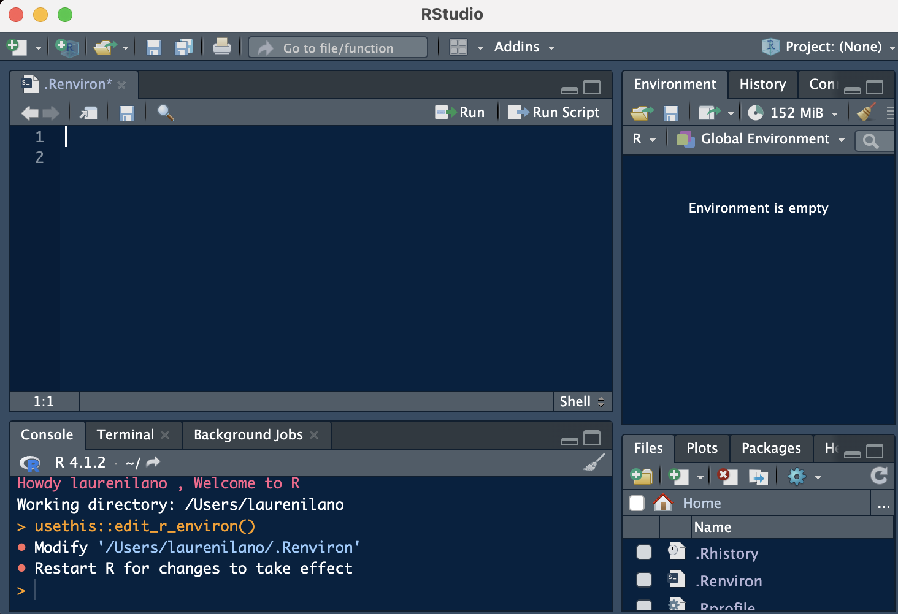
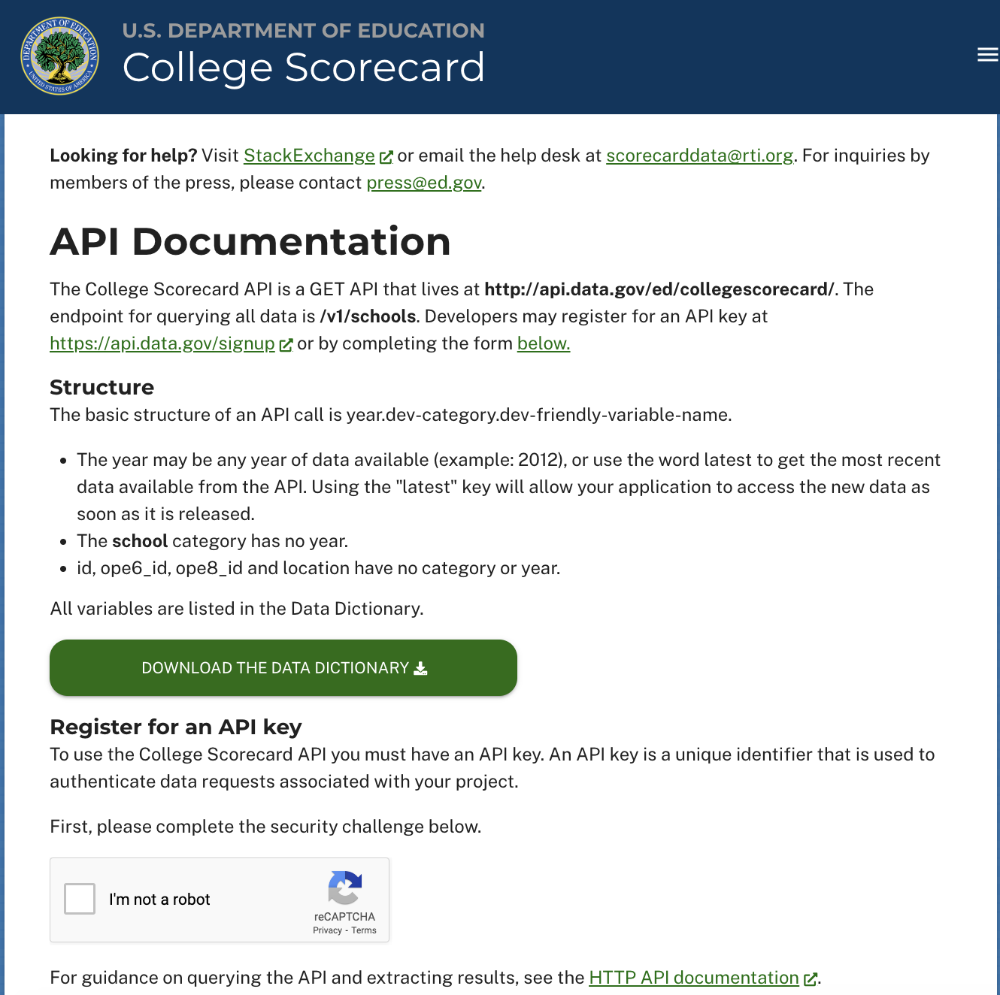

VAR_NAME=valueIntroduction
Sometimes you have information that you want R to be able to access, without having to type it in every time. We do this all the time in a session when we create variables that hold a piece of information like a threshold value. But, sometimes you have variables that you want to set to access during all your sessions which is where the .Renviron file comes in. Setting environment variables in .Renviron is a convenient way to make the information available to all R sessions without having to type them in every time. These environment variables can be used to store various information such as the path to a data directory, API keys, and other important information that you don’t want to hardcode in your R scripts.
When I was working on my dissertation, I never thought twice about hardcoding API keys because all the code was for my eyes only. (Unfortunately, that also introduced a whole host of issues related to clarity and just basic organization, but that is for another day.)
After leaving academia and working in more collaborative environments, I really had to be more disciplined in my coding by becoming more careful about keeping my API keys and passwords private. I think in general, its just good practice to avoid hardcoding passwords–I mean, it seems pretty obvious to me now–but it never really came up in the courses I took.1
In this blog, I’ll walk you through creating the .Renviron file and how to use it to store an API Key. In particular, we will create and store an API Key for the College Scorecard dataset. You can manually download College Scorecard data, but we can also connect to the API and get data directly into R using the rscorecard package 2 developed by Ben Skinner.
Back-up…what is an API?
API stands for Application Programming Interface and it essentially allows you to connect to the data elements that underlie a particular website. Zapier has a really good Introduction to APIs tutorial here.
The College Scorecard site was designed to be a useful tool for students to compare different institutions and there is a user interface that allows you to filter based on many different characteristics like cost, graduation rate, geographic location, etc. The interface is nice and all, but we can use the API to access the underlying data if we want to analyze it on our own.
Creating .Renviron
.Renviron file is not created by default, so you are going to have to do some work to create it yourself. Luckily, it’s pretty darn easy.
You can create a file in a text editor like Notepad and save it as “.Renviron” or you can use the edit_r_environ() function from the usethis package. Both methods will do the exact same thing. If you are going to create the file using a text editor, you just have to make sure to save the file in the correct location.
The location of the .Renviron file depends on the operating system you are using:
- On Windows, the file is located in the user profile directory, usually at
C:\Users\Username\Documents\.Renviron. - On macOS and Linux, the file is located in the home directory, usually at
~/.Renviron.
In the screenshot below, you can see that we typed usethis::edit_r_environ() in the console and an .Renviron file appeared. It automatically created the file in the correct place and now all we have to do is type our API key in the file and save it.

Setting environment variables
Once you have created the .Renviron file, you can set the environment variables in it using the following format:
For our purposes, we want to set up an API key so we would do so using the following format. The left hand side is the variable name so make sure to select something that you can remember :)
API_KEY=your_api_keyDigression #1: Getting a Scorecard API Key
Ok, so in order to set up our API key, we need to get one! If we go to the College Scorecard documentation site we can sign up for an API key using the form at the bottom of the page. After confirming we are not a bot, we just have to fill out our name and email address. In a few minutes, we will receive an email with our 40-character API key. 
Why do I need this pesky key??
They want to know who to come after (or ban) if you violate their terms. Don’t share your key because someone could do bad things and get you in trouble.
Now that we have our API key, all we need to do is type the following into our .Renviron file:
GOV_API_KEY="{your_40_digit_key}"Now that we’ve set up our key, let’s try to use it. # Using environment variables in R
Once you have set the environment variables in .Renviron, you can use them in R by using the Sys.getenv() function.
Important
Make sure to restart your R session after saving your .Renviron file!
We can test to make sure our environment variable is accessible to us by running the Sys.getenv() function. If we set up our environment variable correctly, we should see our 40-digit key in the console output after running this code:
Sys.getenv(GOV_API_KEY)[1] ""Downloading Scorecard Data
The rscorecard package is a great API wrapper in the R language that allows us to make API calls in the comfort of R. I encourage you to check out the package documentation for more information on all the package features.
The first thing you need to do when using the package is registering your API key in your R environment. The package has a function sc_key() that you use to set your API key, but in the documentation they suggest hardcoding your API key, which we are trying to avoid.
# Example from rscorecard documentation:
## use your real key in place of the Xs
sc_key('xxxxxxxxxxxxxxxxxxxxxxxxxxxxxxxxxxxxxxxx')Let’s try it by referencing the variable in our .Renviron file to demonstrate how our method allows for the same functionality without having to hardcode our API key in our script. Following the documentation, run the sc_key() function with to register our API key using the variable we set in .Renviron.
library(rscorecard)
sc_key(Sys.getenv("GOV_API_KEY"))DATAGOV_API_KEY environment variable now set. You may now use sc_get() without specifying a key.Now that we’ve set up our key, let’s request some data. Let’s get a list of HBCUs by state.
sc_init() %>%
sc_filter(hbcu==1) %>%
sc_select(unitid, instnm, stabbr, hbcu) %>%
sc_year('latest') %>%
sc_get() %>%
head()Large request will require: 1 additional pulls.Request additional chunk 1Request complete!# A tibble: 6 × 5
unitid instnm stabbr hbcu year
<int> <chr> <chr> <int> <chr>
1 100654 Alabama A & M University AL 1 latest
2 100724 Alabama State University AL 1 latest
3 101240 Gadsden State Community College AL 1 latest
4 101462 J. F. Drake State Community and Technical College AL 1 latest
5 101569 Lawson State Community College AL 1 latest
6 101675 Miles College AL 1 latestGreat! It seems to work and we didn’t have to hardcode our API key. Now we can freely share the code with collaborators without having to worry that our private key will be compromised. And better yet, if they have their .Renviron variable set up, they can run the code and it will just work.
Conclusion
This was just one example of how you could set up and use the .Renviron file. In addition to API keys, it is also useful to set up usernames and passwords for connecting to a database or setting up your default AWS region.
Footnotes
Jim Hester and Jenny Bryan have a great book that teaches how to create dot files and other important, but often overlooked things called What they forgot to teach you about R. The book also has the best domain ever: https://rstats.wtf/↩︎